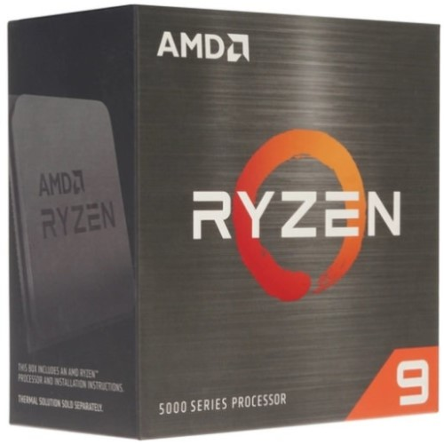

| 
|
Процессор AMD Ryzen 9 5900X BOX |
| Цена: 40 299 руб. | |
|
Характеристики
| |
|
Описание 12-ядерный процессор AMD Ryzen 9 5900X BOX – устройство высокого класса, рассчитанное на функционирование в составе производительных игровых ПК. Модель также подходит для «участия» в сборке системного блока, активно используемого для работы с мультимедиа-данными. Не вызовут сложностей и стандартные условия эксплуатации (например – работа в Интернете и с офисным программным обеспечением). Процессор AMD Ryzen 9 5900X BOX характеризуется базовой частотой 3700 МГц. Частота в турборежиме может достигать 4800 МГц. Преимуществом устройства является значительный (64 МБ) объем кеш-памяти 3-го уровня. Процессор не имеет графического ядра. Тип поставки процессора – BOX. В данном случае это означает наличие только коробки и документации. Выбор системы охлаждения (кулера или СВО) предоставлен пользователю. TDP процессора – 105 Вт. | |